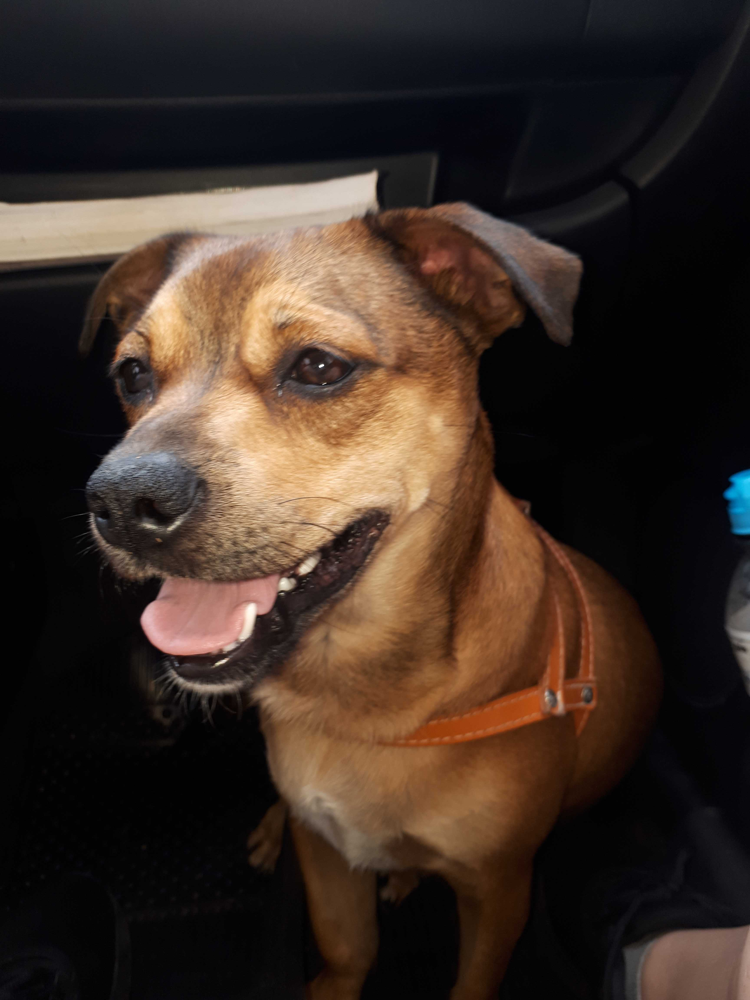

Quem sou eu:
Sou brasileira, nascida em Brasília/DF. Morei por dois meses em Itapema/SC e por um ano e oito meses em Andradas/MG. 
Tenho 29 anos, gosto de assistir filmes e séries, aprender coisas novas, ler, pintar o cabelo, enfim, um pouquinho de tudo.
Sou mãe de um cachorrinho lindo chamado Fred Weasley.
Meu estilo de música preferido é Rock, mas dependendo do dia, escuto de tudo (exceto funk rsrs).
Um blog que curtia muito quando tinha mais tempo era esse aqui.
Minha formação
Possuo uma graduação e um mestrado em Química, um MBA em Tecnologia Cosmética, uma pós-graduação em Gastronomia e cozinha autoral, mas agora acredito ter encontrado minha verdadeira paixão: Desenvolvimento Web
Lista de habilidades
- Facilidade de aprendizado;
- Inglês;
- Eclética;
- Iniciando Linux;
- Iniciando Git & Git Hub;
- Iniciando html;
- Química analítica.